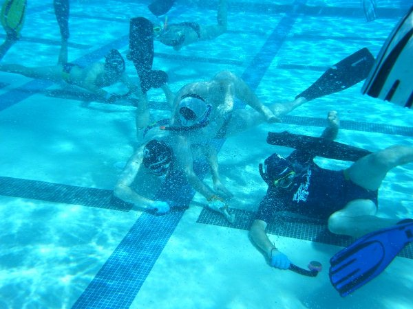
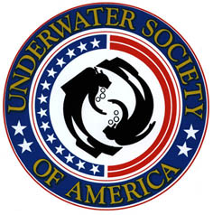

What is Underwater Hockey (UWH)?
Where it All Began
Underwater Hockey was invented in 1954 by the Southsea Sub-Aquatic Club in Portsmouth, England. It was originally called “Octopush” because each team had 8 players, a small stick called a “pusher”, and an uncoated lead puck called a “squid”. Most countries around the world who have adopted the sport refer to it as “Underwater Hockey” but it is still referred to as “Octopush” in the United Kingdom. Underwater Hockey is very popular in the United Kingdom, Australia, Canada, New Zeeland, and South Africa.
Governing Bodies
There are two world governing bodies for Underwater Hockey: Confederation Mondiale Activities Sub-aquatics (CMAS) which is the European governing body. CMAS organizes international competitions known as the World Games which also include fin swimming and free-diving. The first World Games were held in Bari, Italy in 2007. The World governing body is the World AquaChallenge Association (WAA) which organizes the official World Championships; it was held in Eger, Hungary in 2013 where the USA Women’s team took 6th place. The next World Championships will be held in South Africa in August, 2016.
Underwater Society of America (USOA)
The official governing body of Underwater Hockey in the United States is the Underwater Society of America (USOA). They provide support and national recognition for Underwater Hockey as well as Underwater Rugby, Fin Swimming, and other underwater diving sports. More information on USOA can be found here and further information about upcoming tournaments and Underwater Hockey news in the United States can be found here.
Equipment
Underwater Hockey is a fast paced game played on the bottom of a 6’-8’ pool. Each team has 6 players and the players wear fins, a mask, snorkel, cap with ear guards, and a glove. The sticks that are used are very short, about 1 foot long, and the puck is around 3 pounds and covered in a hard plastic case.
Rules and Strategy
Play strategy is similar to ice hockey or soccer, there are a number of different formations and because players hold their breath while playing, team work is crucial to scoring. The rules are "non-contact", players cannot hold off other players with their free arm, making the game equal across all ages and genders. The main objective of the game is to maneuver the puck across the pool and shoot it into the opponent’s goal. The official rules can be found here.
Learning to Play
Previous swimming experience is not necessary, that's what the fins are for! Some of the best players did not swim before they joined the team. The objective of MSU Underwater Hockey is to teach anyone and everyone how to play the sport regardless of their previous swimming experience.